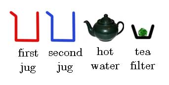
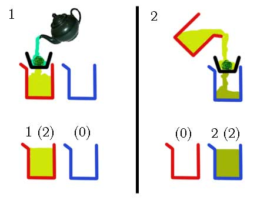
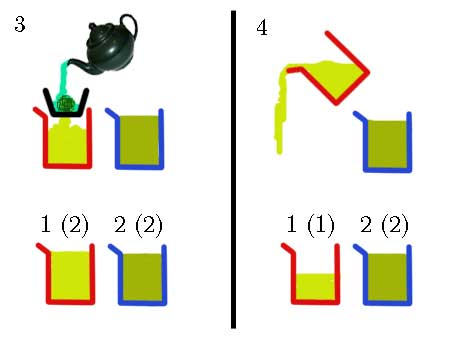
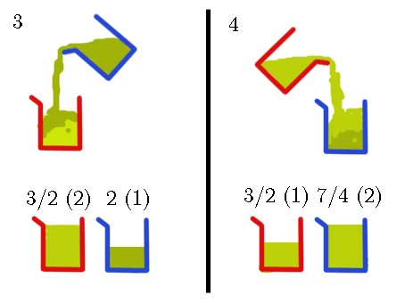

Problem Statement
Origin The Mathematical Association of Thailand Contest 2007, High School Level, Problem 35 (write down the answer only). Note that this is a loose translation.
Eighty students with IDs 1, 2, ..., 80 take turns in the order of increasing ID to write numbers on a blackboard. During the first round, each student writes down her own ID. During the subsequent rounds, each student computes the arithmetic mean of the numbers on the board, and then replaces the number she wrote in the previous round with the computed result. As they perform this process, all numbers on the board converge to the same constant. Find that constant.
Solution
After the contest, I went to China with my family during the New Year's holiday. The Chinese tour we went with imposed mandatory visits to local factories (sometimes called "scams") as usual. One of them is a tea factory.
The staff prepared the following tools for making tea:

First, the staff made a jug of tea by pouring hot water through the tea filter. To double its concentration, she poured the tea through the filter once more.
Suppose each jug holds 2 units of tea. The numbers outside parentheses are concentrations, while the numbers inside are quantities.

Next, the staff made less concentrated tea in the first jug, and then poured away half of it (= 1 unit); this way, the concentration was preserved.

Then the staff mixed the tea by alternatingly pouring 1 unit of tea from one jug into the other.

Observe that after each pour, the new concentration is the average of the two old concentrations.
Now suppose she continued mixing until the two jugs have roughly the same concentration $x$. This is the classic mixture problem: the total mass (= volume × concentration) must remain constant. So we get $$1\times 1 + 2\times 2 = (1+2)\times x$$ which makes $x = 5/3$.
Now imagine 80 jugs. Each jug $i$ ($i = 1,\dots,80$) starts with $i$ units of tea with concentration $i$. Then at each step, we find the jug $J$ with 1 unit of tea, and then pour 1 unit of tea from each of the other jugs into $J$. Now $J$ will have 80 units of tea, while the other jugs which had $2,3,\dots,80$ units of tea will now have $1,2,\dots,79$ units. Moreover, the concentration in $J$ will become the arithmetic mean of the previous concentrations in all 80 jugs. Essentially, the concentrations exactly match the numbers the students write on the board.
So if all concentrations converge to $x$, we get $$1\times 1 + \dots + 80\times 80 = (1 + \dots + 80)\times x$$ giving $x = 161/3$. (Luckily, we don't have to prove that the numbers converge here.)
Epilogue
I wrote this explanation in my (now defunct) blog in 2008 and also in my college essay. The illustrations above were salvaged from my old CD-R, but the original text was lost.